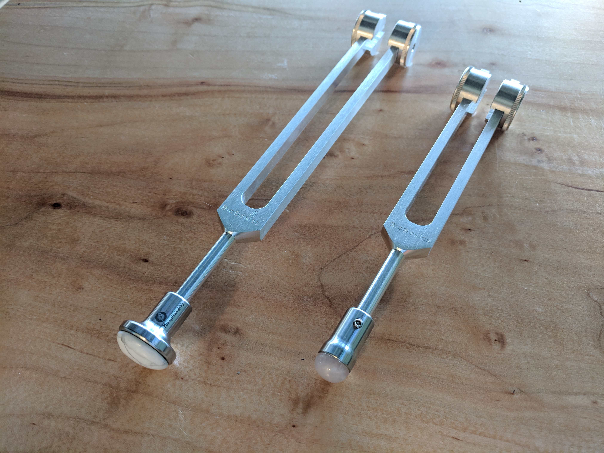
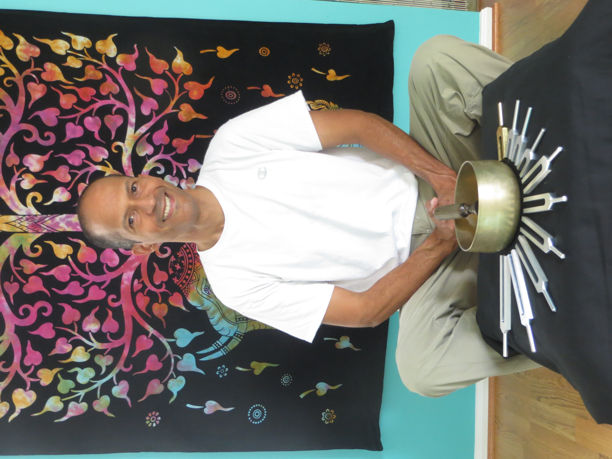

Get In Tune
Our bodies are like a musical instrument. Daily stress, accidents, injuries and trauma creates noise in our energy field which puts us into an out-of-tune state. This noise, or stuck emotional energy, can be limiting us or causing us physical issues.
Through daily practices like meditation, improving our diet, exercise, being mindful of where and how we spend our energy physically, mentally and emotionally, we can bring ourselves into a state of harmony. When we know how to do this, we have mastered our vibration.
To receive emails about my local events and updates, join my mailing list by emailing me at soundhealing@jlugo.net.
Join the Master Your Vibration (MYV) newsletter to get interesting and useful information to help you physically, mentally, emotionally and spiritually.
If you are interested in events and updates related to what I am doing with sound and vibration, join the Events and Updates newsletter.
Vibrational Fascia Release Technique
Do you have physical pain? I can help with that. I am certified in the Vibrational Fascia Release Technique (VFRT).
VFRT focuses mainly on the soft “connective” tissue of the body where pain and restriction is a result of collagen fascia fibers and pressurized fluids working together to press against pain receptors, pinch or compress nerve bundles, reduce blood flow, and prevent the lymphatic system from removing fluids from these enclosed “interstitial” spaces. I use a combination of vibration and compression from tuning forks to directly affect the collagen fascia fibers and compressed fluids where the restriction either “releases” or “resolves” to return a restricted area back to normal function. Find out more at NEHC Academy.

Biofield Tuning
Are old injuries, trauma or stress holding you back? I can help with that. I am a Certified Biofield Tuning Practitioner.
Biofield Tuning is based on the premise that the human biofield - the energy field that surrounds and permeates our bodies - is inextricably connected with our conscious and subconscious mind, including all of our memories. All physical, mental and emotional disorders can be perceived as “dissonance” in our energy fields. Biofield Tuning is able to diminish and resolve this dissonance and in doing so, alleviate and even eradicate the corresponding physical, mental and/or emotional symptoms.
I am available to give sessions on weekends in College Park, MD. Are you ready to schedule a session or just have questions? Send me an email at soundhealing@jlugo.net.About Me
My mission is to explore the use of sound and vibration for physical and emotional wellness and to explore the spiritual qualities of sound. I work with clients to help bring their energy field into harmony, primarily through sound and vibration therapies.
I became interested in sound therapy in 2013 when I discovered the work of Jill Mattson and her healing music. Since then, I have studied and practiced vocal toning, healing musical intervals and tuning fork techniques. I have studied at the Energy Masters Institute in Falls Church, VA. I am an Ordained Minister with the Order of Melchizedek.
I am passionate about the healing and transformative power of tuning forks, our voice and music. I enjoy sharing this information.
My primary occupation is computer programmer. I see clients for Biofield Tuning and VFRT sessions in the evenings and on weekends. I give presentations and workshops on the use of our voice and tuning forks for wellness.
